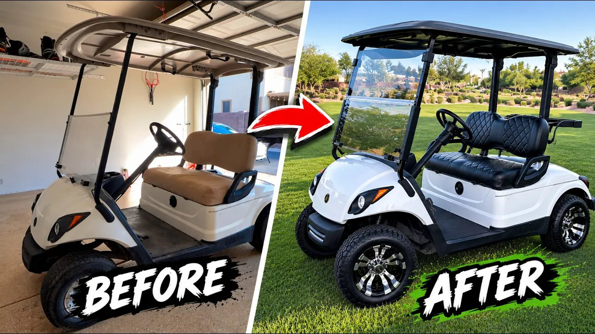
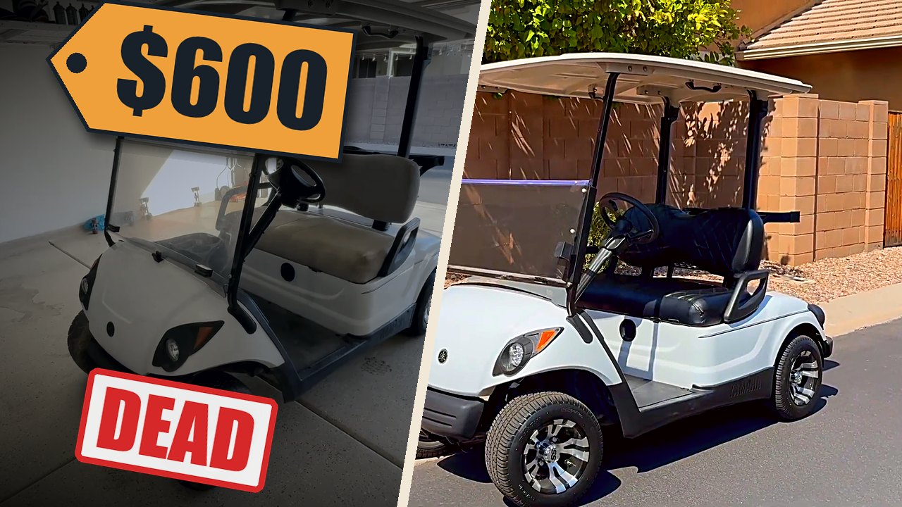
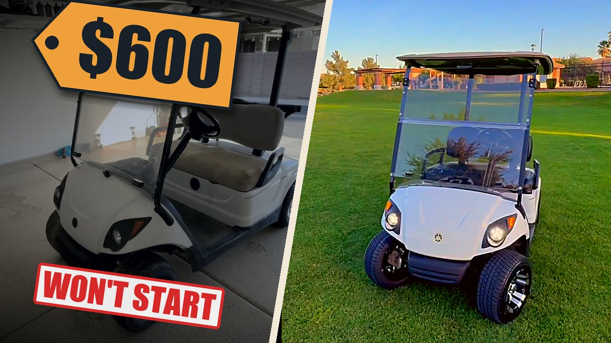
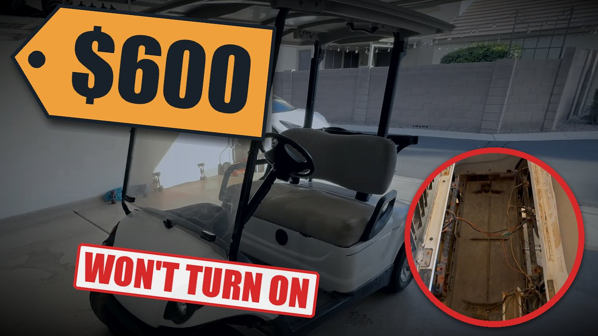
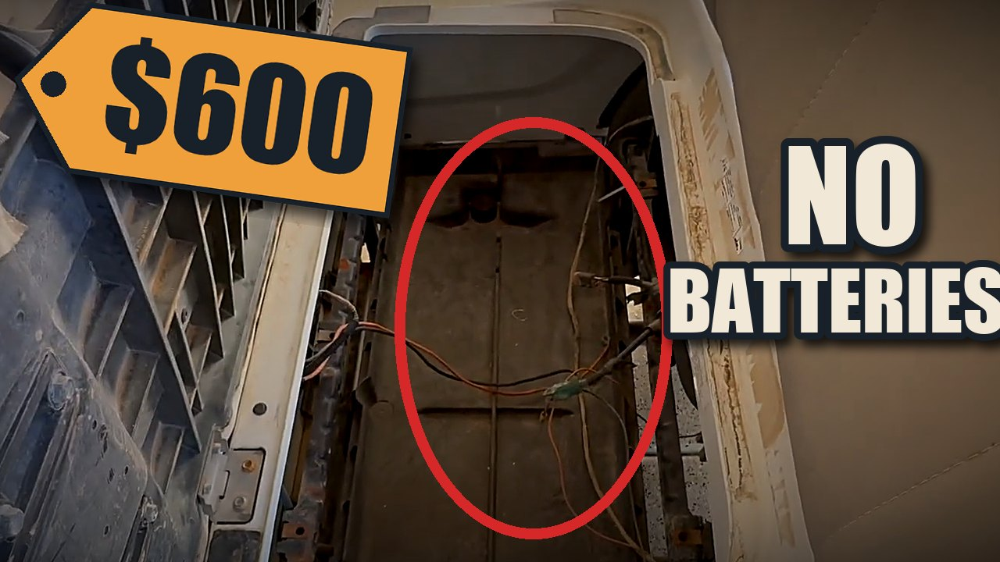
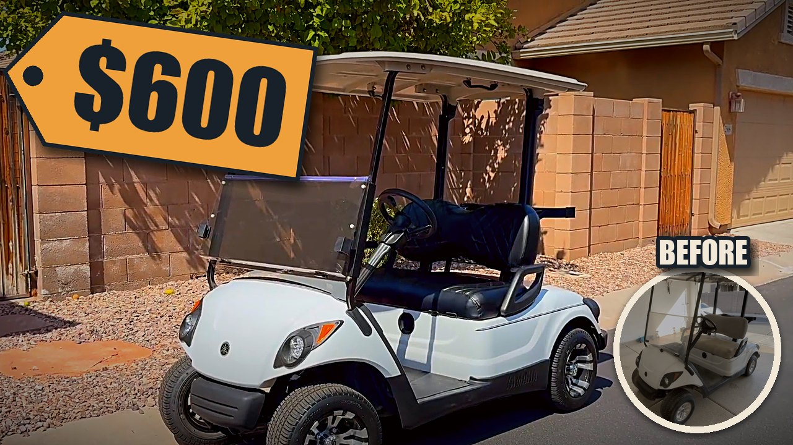
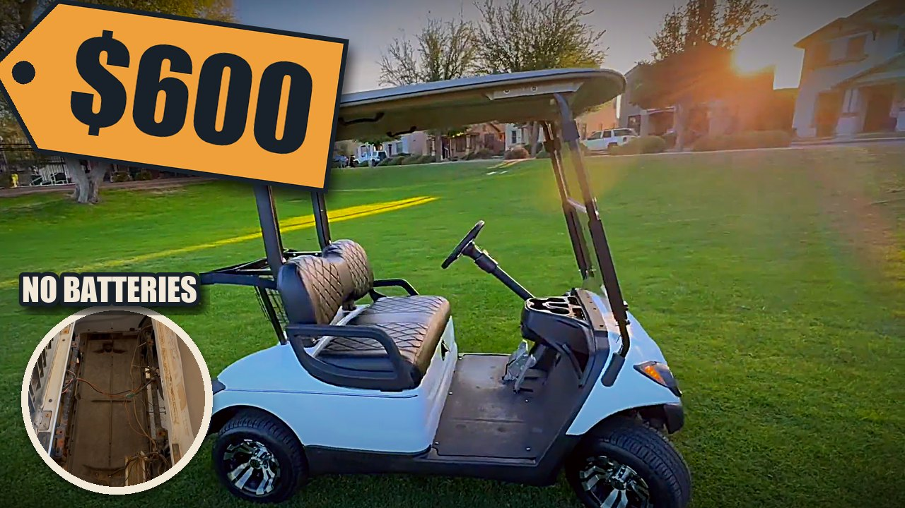
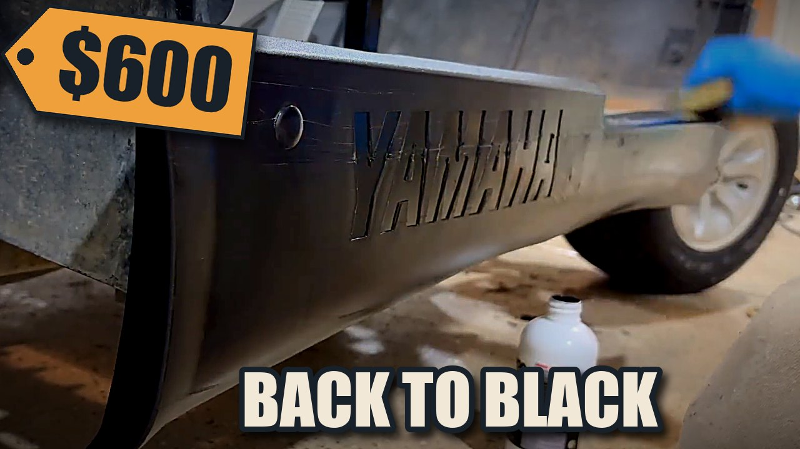
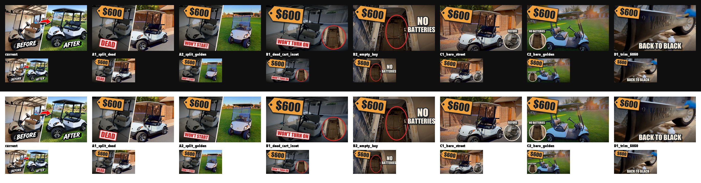

Why it's leaking viewers
What the retention graph says
- 85% of viewers are gone by 0:30. The title promises "THIS", but the first minute is a calm walkaround of the broken cart. The $600 is never said and nothing gives a reason to stay.
- Flat after that. Viewers who make it past the intro mostly stay, so the intro is where to fix it.
- A bump at the end. Likely people skipping to the reveal. They want the result, so the opening should promise it.
- The voiceover stops at 1:05 and music runs for eight minutes. No story, no new questions, nothing to wait for.
The fix in one line each
- Thumbnail: show the problem ($600, dead) and hold back part of the answer.
- First 5 seconds: one strong hook, no dead air, music from frame one.
- First 30 seconds: open the big question ("will it even turn on?") and a second one ("can a buffer save this body?").
- Body: steps with a payoff every 60 to 90 seconds, a running "spent so far" number, and a short voice line at every step.
- Ending: the power-on moment and the reveal, with real numbers.
Thumbnail ideas
Every image below is built from real frames of your footage, with nothing generated or altered on the cart. Colors come from the Sidequest logo.

What's working
Clean before/after at a matched angle, a bright "after", and the cart reads clearly even at small sizes.
What to change
- It gives the whole answer away. The viewer gets the full story from the image, so there's no reason to click.
- "BEFORE / AFTER" wastes the text. The split already says that. Use the words for the hook: $600, won't start.
- The before doesn't look broken. It's bright and clean, so the change looks small.
- Stock styling. Lime brush strokes are a template look, not your navy and orange.
- The title repeats the image. "Into THIS" adds nothing when the image already shows "this".
- Check the "after" is accurate. It looks heavily processed next to the raw frames.
Test these three first
- 1A2 Split golden: keeps the before/after you know works, adds the hook ($600 + WON'T START). The front-on golden-hour cart is the clearest object at phone size.
- 2B1 Dead cart: only the problem, with the empty battery bay as proof. Matches the new intro and holds back the payoff.
- 3C1 Hero street: the brightest frame in the video, with a price that feels too low for what you see.
YouTube Studio's Test & Compare runs up to three thumbnails against each other on watch time. Keep the title fixed while it runs. "I Bought a Golf Cart That Won't Even Turn On" works with all three, then test titles after you have a winner.
A · Before / after, punched up
Your current concept rebuilt: the before graded dull and labeled with the problem, the after warm, the price in a brand tag.


B · Problem first
Show only the problem. The click is the only way to find out how it turns out.


C · Hero shot + price tag
One focal point, the finished cart, and a price that feels too low. The circle shows where it started.


D · Satisfying 50/50
The trim going from gray to black. Best as a Shorts cover or a refresh later; in the home feed a cold viewer can't tell it's a golf cart.

Worth shooting next time
Most breakout thumbnails in this genre include the creator's face reacting. Your footage doesn't have one. A quick photo of you next to the dead cart (or the finished one) gives you a much stronger thumbnail option for this video and every future one.
Feed test: which would you click?
Every option at real phone sizes. Scroll past them quickly the way you would on YouTube and notice which one stops you.
All of them at once

New intros
Coming in the next update. We're rebuilding the opening talk track from research into the biggest build and restoration channels: how their breakout videos open, line by line. Three different hooks will be cut from your footage: a challenge, a stakes bet, and a satisfying-first opener. Each will be about 15 to 30 seconds and lead into the plan below.
The rest of the video: one build, six steps
Viewers see clear steps, each with its own small payoff, instead of one long montage. A checklist on screen ticks off problems as they're solved, and a "spent so far" number updates as you go. The timecodes point to footage you already have.
| Step | Your footage | Open with | Pay off with |
|---|---|---|---|
| 1 · Tear it down | Roof off 1:30, seat 1:36, lights out 2:00, wiring nest 2:18, body off 2:30 to 3:30 | The question from the intro: why won't it turn on? | The wiring nest: "This is why." First "spent so far" update. |
| Re-hook | Trim restore close-up 5:38 to 5:46, moved earlier | "Before I touch the body, does this stuff even work?" | Gray to black. Proof the buffer plan might work. Check off the trim. |
| 2 · Save the body | Wash 3:42, scrub 3:54, buffing 4:10 to 4:45 | "No repaint. Just a buffer." | The shine wipe at 4:40 and a before/after split. Check off the body. |
| 3 · Night shift | Driveway at dusk 5:00, spray painting under the string lights 5:08 to 5:24 | A time jump. Your most cinematic footage, give it room. | Black frame and struts. Update the spend. |
| Re-hook | New battery going in, 8:20, saved for here | "It looks great. None of it matters if it doesn't turn on." | Re-opens the big question for the back half. |
| 4 · Put it back together | Black plastics 6:05 to 6:25, floor mat 6:40, body on 7:05, timelapse 7:20 to 7:50, roof 7:54 | "Putting it back together." | The cart is whole again. Check off the solenoid and controller. |
| 5 · Moment of truth | Battery 8:24 to 8:32, tail lights on 8:46 to 8:52 | Silence. Hand on the switch. Hold it. | Tail lights glow. Check off "make it turn on". Slow it down or use a closer angle so it lands. |
| 6 · Upgrades + reveal | Steering wheel 8:00, seat 8:28, rims 9:00, LEDs 9:12, street 9:18, golden hour 9:30 | "Now the fun part." | The golden-hour reveal, the final real total, then end screen. |
What we need from you
- The real total you spent and the parts list. The video only states numbers that are real.
- Any clip of the cart driving, even from a phone. It would be the strongest ending.
- A closer angle of the tail lights coming on, if one exists.
- A photo of you with the cart for the thumbnail.
Brief for Claude Code
Copy this into Claude Code in the folder with your project files. It has the plan, the rules and the structure, so it can help you edit the rest of the video. It will be updated with the final intro scripts.
# Sidequest Builds: "$600 golf cart" re-edit brief
## Goal
Raise retention and click-through on "I Turned a $600 Golf Cart Into THIS"
(youtu.be/DWL4MNjXfX4, 9:47). Current state: 85% of viewers leave by 0:30, the curve
is flat after that, and there is a bump at the end (people skipping to the reveal).
## Facts we can state (and only these)
- 2012 Yamaha G29, electric. Bought for $600.
- It would not turn on: no batteries, no solenoid, dead controller, broken wires.
- Lights and plastic were sun-damaged; the body was buffed, not repainted.
(The frame and struts WERE spray painted, so never say "no paint" about the whole cart.)
- New battery, LED lights, rims, diamond-stitch seat, steering wheel, black trim restored.
- Proof of power: tail lights glow red at 8:46. There is no driving shot yet.
- Total spend and resale value: UNKNOWN until he provides them. Never invent numbers.
## Rules
- First 5 seconds: one hook, no dead air, music from frame one.
- Open the big loop early: "will it even turn on?" Close it at the tail lights.
- Second loop: "can a buffer save this body without a repaint?" Close it at the buff.
- Every 60 to 90 seconds: a short voice line plus a visible payoff.
- On screen: a simple checkbox list of problems (BATTERIES, SOLENOID, CONTROLLER,
BODY, MAKE IT TURN ON) that gets ticked off, and a "SPENT SO FAR" number.
- Viewer-facing labels say "STEP 1", "STEP 2"... never internal words like "arc".
- Plain, short lines in his own voice. No hype words, no em dashes.
## Brand
Navy #18212A, orange #F0A03A, burnt orange #E2702C, cream #F2E8D8.
Headline font: DIN Condensed Bold. UI font: Avenir Next Condensed Heavy.
## Structure (original timecodes)
Step 1 Tear it down: roof 1:30, seat 1:36, lights 2:00, wiring nest 2:18, body off 2:30-3:30.
Pay off: "This is why it didn't turn on." First spend update.
Re-hook: trim restore close-up 5:38-5:46 (move earlier): gray to black.
Step 2 Save the body: wash 3:42, scrub 3:54, buffing 4:10-4:45. Before/after split.
Step 3 Night shift: dusk 5:00, spray under string lights 5:08-5:24.
Re-hook: new battery 8:20: "None of it matters if it doesn't turn on."
Step 4 Put it back together: plastics 6:05-6:25, mat 6:40, body on 7:05, timelapse 7:20-7:50, roof 7:54.
Step 5 Moment of truth: battery 8:24-8:32, tail lights 8:46-8:52. Hold the silence, then the glow.
Step 6 Upgrades + reveal: wheel 8:00, seat 8:28, rims 9:00, LEDs 9:12, street 9:18, golden hour 9:30.
End on the real total.
## Thumbnail plan
Test three in YouTube Test & Compare with a fixed title
("I Bought a Golf Cart That Won't Even Turn On"):
1. Split, dull "before" labeled WON'T START + $600 tag, golden-hour "after".
2. Problem only: dimmed dead cart, "WON'T TURN ON", empty battery bay inset.
3. Hero shot of the finished cart with a $600 tag and a small "before" inset.
Next shoot: a photo of him with the cart for a face/reaction thumbnail.
## Intro scripts
Coming in the next update of this page.